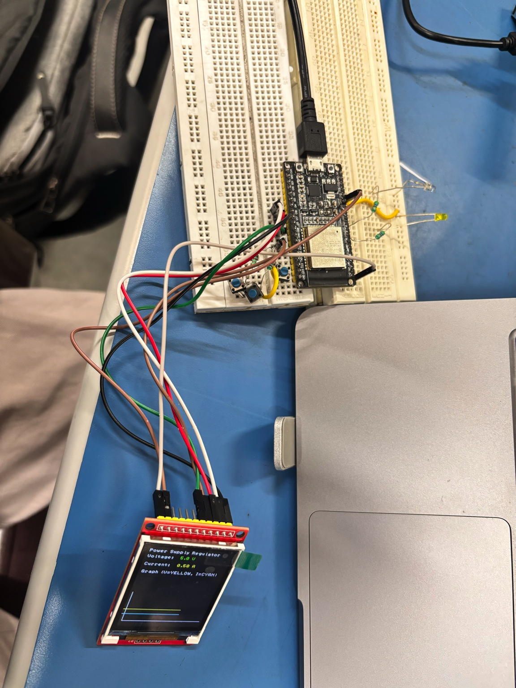
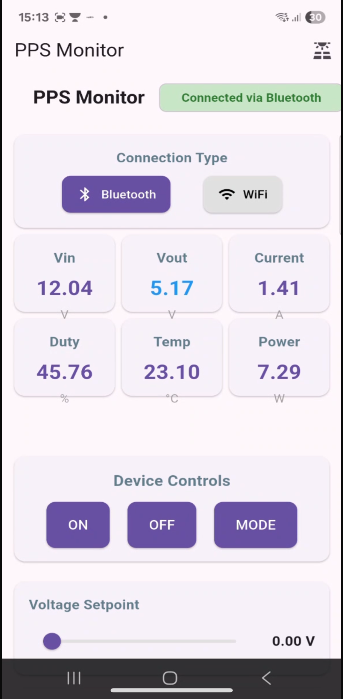
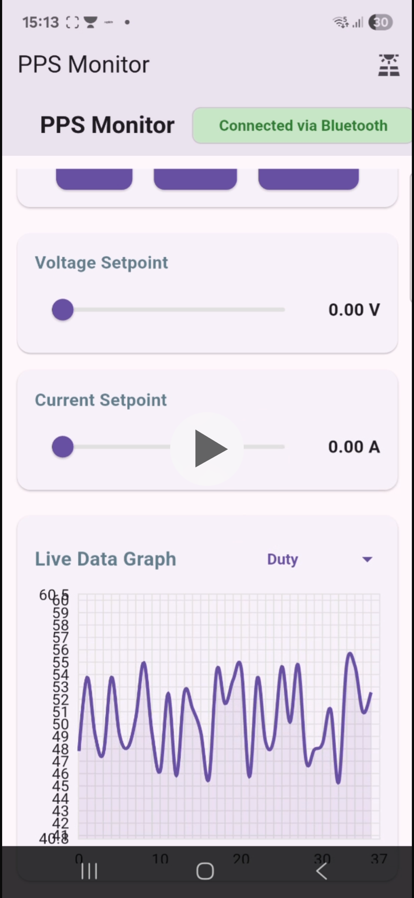
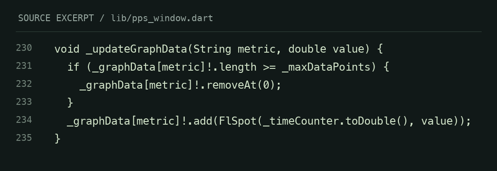

PPS / PV Interfaces
ESP32 display and Flutter prototypes for power-system telemetry. From a wired bench display to a mobile interface for monitoring and commands.


The challenge
Make power-system information usable on small embedded screens and mobile devices: clear values, responsive graphs, and accessible controls across different communication paths.
My contribution
Built ESP32 TFT interfaces with selective redraw, debounced buttons, scrolling graph buffers, and touch calibration. Developed Flutter views for telemetry, graphing, and command interactions.
Implementation
The report describes W5500 Ethernet, Bluetooth Classic, BLE, and later Wi-Fi variants. The public Flutter code implements BLE discovery, WebSocket transport, six-field telemetry parsing, rolling plots, and control messages.
Evidence & limits
The public ESP32 firmware generates simulated readings and logs received commands. It demonstrates communications and interface behavior, not calibrated power measurements or physical closed-loop regulation. The touchscreen prototype also used a potentiometer as an analog input.
A closer look

Inside the code
SOURCE SNAPSHOTS
Read accessible code text
void _updateGraphData(String metric, double value) {
if (_graphData[metric]!.length >= _maxDataPoints) {
_graphData[metric]!.removeAt(0);
}
_graphData[metric]!.add(FlSpot(_timeCounter.toDouble(), value));
}